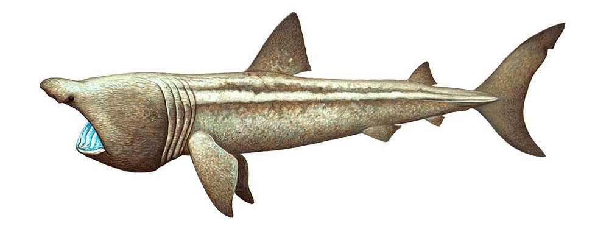

Basking Shark

The basking shark (Cetorhinus maximus) is the second-largest living shark, after the whale shark, and one of three plankton-eating shark species, along with the whale shark and megamouth shark. Adults typically reach 6–8 m (20–26 ft) in length. They are usually greyish-brown, with mottled skin. The caudal fin has a strong lateral keel and a crescent shape.
The basking shark is a cosmopolitan migratory species, found in all the world's temperate oceans. A slow-moving filter feeder, its common name derives from its habit of feeding at the surface, appearing to be basking in the warmer water there. It has anatomical adaptations for filter-feeding, such as a greatly enlarged mouth and highly developed gill rakers. Its snout is conical and the gill slits extend around the top and bottom of its head. The gill rakers, dark and bristle-like, are used to catch plankton as water filters through the mouth and over the gills. The teeth are numerous and very small, and often number 100 per row. The teeth have a single conical cusp, are curved backwards, and are the same on both the upper and lower jaws. This species has the smallest weight-for-weight brain size of any shark, reflecting its relatively passive lifestyle.
Basking sharks have been shown from satellite tracking to overwinter in both continental shelf (less than 200 m or 660 ft) and deeper waters. They may be found in either small shoals or alone. Despite their large size and threatening appearance, basking sharks are not aggressive and are harmless to humans.
The basking shark has long been a commercially important fish, as a source of food, shark fin, animal feed, and shark liver oil. Overexploitation has reduced its populations to the point where some have disappeared and others need protection.
Taxonomy

The basking shark is the only member of the family Cetorhinidae, part of the mackerel shark order Lamniformes. Gunnerus was the first to describe and name the species Cetorhinus maximus from a specimen found in Norway. The genus name Cetorhinus comes from the Greek ketos which means marine monster or whale and rhinos meaning nose; the species name maximus is from Latin and means "greatest". In the following centuries, more attempts at naming included: Squalus isodus, in 1819 by Italian Zoologist Saverio Macri (1754–1848); Squalus elephas, by Lesueur in 1822; Squalus rashleighanus, by Couch in 1838; Squalus cetaceus, by Gronow in 1854; Cetorhinus blainvillei by the Portuguese Biologist Felix Antonio De Brio Capello (1828–1879) in 1869; Selachus pennantii, by Cornish in 1885; Cetorhinus maximus infanuncula, by the Dutch Zoologists Antonius Boudewijn Deinse (1885–1965) and Marcus Jan Adriani (1929–1995) in 1953; and finally Cetorhinus maximus normani, by Siccardi in 1961. Other names include bone shark, elephant shark, hoe-mother (sometimes contracted to homer), sail-fish, and sun-fish.
Range and Habitat
The basking shark is a coastal-pelagic shark found worldwide in boreal to warm-temperate waters around the continental shelves, and entering into brackish waters on occasion. It prefers 8 to 14.5 °C (46.4 to 58.1 °F) temperatures, but has been confirmed to cross the much-warmer waters at the equator. It is often seen close to land, including bays with narrow openings. The shark follows plankton concentrations in the water column, so is often visible at the surface. It characteristically migrates with the seasons. The basking shark is found from the surface down to at least 910 m (2,990 ft).
Anatomy and Appearance
The largest accurately measured specimen was trapped in a herring net in the Bay of Fundy, Canada, in 1851. Its total length was 12.27 m (40.3 ft), and it weighed an estimated 16 t (16 long tons; 18 short tons). Dubious reports from Norway mention three basking sharks over 12 m (39 ft), the largest at 13.7 m (45 ft), during 1884 to 1905, these are dubious because few anywhere near that size have been caught in the area since. On average, the adult basking shark reaches a length of 6–8 m (20–26 ft) and weighs about 5.2 t (5.1 long tons; 5.7 short tons). Some specimens still surpass 9–10 m (30–33 ft), but after years of large-scale fishing, specimens of this size have become rare.
They possess the typical shark lamniform body plan and have been mistaken for great white sharks. The two species can be easily distinguished by the basking shark's cavernous jaw, up to 1 m (3 ft 3 in) in width, longer and more obvious gill slits that nearly encircle the head and are accompanied by well-developed gill rakers, smaller eyes, much larger overall size and smaller average girth. Great whites possess large, dagger-like teeth; basking shark teeth are much smaller 5–6 mm (0.20–0.24 in) and hooked; only the first three or four rows of the upper jaw and six or seven rows of the lower jaw function. In behaviour, the great white is an active predator of large animals and not a filter feeder.
Other distinctive characteristics include a strongly keeled caudal peduncle, highly textured skin covered in placoid scales and a mucus layer, a pointed snout—distinctly hooked in younger specimens—and a lunate caudal fin. In large individuals, the dorsal fin may flop to one side when above the surface. Colouration is highly variable (and likely dependent on observation conditions and the individual's condition): commonly, the colouring is dark brown to black or blue dorsally, fading to a dull white ventrally. The sharks are often noticeably scarred, possibly through encounters with lampreys or cookiecutter sharks. The basking shark's liver, which may account for 25% of its body weight, runs the entire length of the abdominal cavity and is thought to play a role in buoyancy regulation and long-term energy storage.
Life History
Basking sharks do not hibernate, and are active year-round. In winter, basking sharks often move to deeper depths, even down to 900 m (3,000 ft) and have been tracked making vertical movements consistent with feeding on overwintering zooplankton.
Surfacing Behaviors
They are slow-moving sharks (feeding at about 2 knots (3.7 kilometres per hour; 2.3 miles per hour)) and do not evade approaching boats (unlike great white sharks). They are not attracted to chum.
Though the basking shark is large and slow, it can breach, jumping entirely out of the water. This behaviour could be an attempt to dislodge parasites or commensals. Such interpretations are speculative, however, and difficult to verify; breaching in large marine animals such as whales and sharks might equally well be intraspecific threat displays of size and strength.
Migration
Argos system satellite tagging of 20 basking sharks in 2003 confirmed basking sharks move thousands of kilometres during the summer and winter, seeking the richest zooplankton patches, often along ocean fronts. They shed and renew their gill rakers in an ongoing process, rather than over one short period.
A 2009 study tagged 25 sharks off the coast of Cape Cod, Massachusetts, and indicated at least some migrate south in the winter. Remaining at depths between 200 and 1,000 metres (660 and 3,280 ft) for many weeks, the tagged sharks crossed the equator to reach Brazil. One individual spent a month near the mouth of the Amazon River. They may undertake this journey to aid reproduction.
On 23 June 2015, a 6.1-metre-long (20 ft), 3,500-kilogram (7,716 lb) basking shark was caught accidentally by a fishing trawler in the Bass strait near Portland, Victoria, in southeast Australia, the first basking shark caught in the region since the 1930s, and only the third reported in the region in 160 years. The whole shark was donated to the Victoria Museum for research, instead of the fins being sold for use in shark fin soup.
While basking sharks are not infrequently seen in the Mediterranean Sea and records exist in the Dardanelles Strait, it is unclear whether they historically reached into deeper basins of Sea of Marmara, Black Sea and Azov Sea.
Social Behavior
Basking sharks are usually solitary but during summer months in particular they aggregate in dense patches of zooplankton where they engage in social behaviour. They can form sex-segregated shoals, usually in small numbers (three or four), but reportedly up to 100 individuals. Small schools in the Bay of Fundy and the Hebrides have been seen swimming nose to tail in circles; their social behavior in summer months has been studied and is thought to represent courtship.
Predators
Basking sharks have few predators. White sharks have been reported to scavenge on the remains of these sharks. Killer whales have been observed feeding on basking sharks off California and New Zealand. Lampreys are often seen attached to them, although they are unlikely to be able to cut through the shark's thick skin.
Diet
The basking shark is a ram feeder, filtering zooplankton, very small fish, and invertebrates from the water with its gill rakers by swimming forwards with their mouths open. A 5-metre-long (16 ft) basking shark has been calculated to filter up to 500 short tons (450 t) of water per hour swimming at an observed speed of 0.85 metres per second (2.8 ft/s). Basking sharks are not indiscriminate feeders on zooplankton. Samples taken in the presence of feeding individuals recorded zooplankton densities 75% higher compared to adjacent non-feeding areas. Basking sharks feed preferentially in zooplankton patches dominated by small planktonic crustaceans called calanoid copepods (on average 1,700 individuals per cubic metre of water). Basking sharks sometimes congregate in groups of up to 1,400 spotted along the northeastern U.S. Samples taken near feeding sharks contained 2.5 times as many Calanus helgolandicus individuals per cubic metre, which were also found to be 50% longer. Unlike the megamouth shark and whale shark, the basking shark relies only on the water it pushes through its gills by swimming; the megamouth shark and whale shark can suck or pump water through their gills.
Reproduction
Basking sharks are ovoviviparous: the developing embryos first rely on a yolk sac, with no placental connection. Their seemingly useless teeth may play a role before birth in helping them feed on the mother's unfertilized ova (a behaviour known as oophagy). In females, only the right ovary appears to function, and it is currently unknown why only one of the organs seems to function.
Gestation is thought to span over a year (perhaps two to three years), with a small, though unknown, number of young born fully developed at 1.5–2 m (4 ft 11 in–6 ft 7 in). Only one pregnant female is known to have been caught; she was carrying six unborn young. Mating is thought to occur in early summer and birthing in late summer, following the female's movement into shallow waters.
The age of maturity is thought to be between the ages of six and 13 and at a length of 4.6–6 m (15–20 ft). Breeding frequency is thought to be two to four years.
The exact lifespan of the basking shark is unknown, but experts estimate to be about 50 years.
Conservation

Aside from direct catches, by-catches in trawl nets have been one of several threats to basking sharks. In New Zealand, basking sharks had been abundant historically; however, after the mass by-catches recorded in 1990s and 2000s, confirmations of the species became very scarce. Management plans have been declared to promote effective conservations.
The eastern north Pacific Ocean population is a U.S. National Marine Fisheries Service species of concern, one of those species about which the U.S. Government's National Oceanic and Atmospheric Administration has some concerns regarding status and threats, but for which insufficient information is available to indicate a need to list the species under the U.S. Endangered Species Act (ESA).
The IUCN Red List indicates this as a vulnerable species.
The endangered aspect of this shark was publicised in 2005 with a postage stamp issued by Guernsey Post.
Importance to Humans
Historically, the basking shark has been a staple of fisheries because of its slow swimming speed, placid nature, and previously abundant numbers. Commercially, it was put to many uses: the flesh for food and fishmeal, the hide for leather, and its large liver (which has a high squalene content) for oil. It is currently fished mainly for its fins (for shark fin soup). Parts (such as cartilage) are also used in traditional Chinese medicine and as an aphrodisiac in Japan, further adding to demand.
As a result of rapidly declining numbers, the basking shark has been protected in some territorial waters and trade in its products is restricted in many countries under CITES. Among others, it is fully protected in the United Kingdom and the Atlantic and Mexican Gulf regions of the United States. Since 2008, it has been illegal to fish for, or retain if accidentally caught, basking sharks in waters of the European Union. It is partially protected in Norway and New Zealand, as targeted commercial fishing is illegal, but accidental bycatch can be used (in Norway any basking shark caught as bycatch and still alive must be released). As of March 2010, it was also listed under Annex I of the CMS Migratory Sharks Memorandum of Understanding.
Once considered a nuisance along the Canadian Pacific coast, basking sharks were the target of a government eradication programme from 1945 to 1970. As of 2008, efforts were under way to determine whether any sharks still lived in the area and monitor their potential recovery.
It is tolerant of boats and divers approaching it, and may even circle divers, making it an important draw for dive tourism in areas where it is common.
Carcass Misidentification
On several occasions, "globster" corpses initially identified by non-scientists as a sea serpents or plesiosaurs have later been identified as likely to be the decomposing carcasses of basking sharks, as in the Stronsay Beast and the Zuiyo-maru cases.